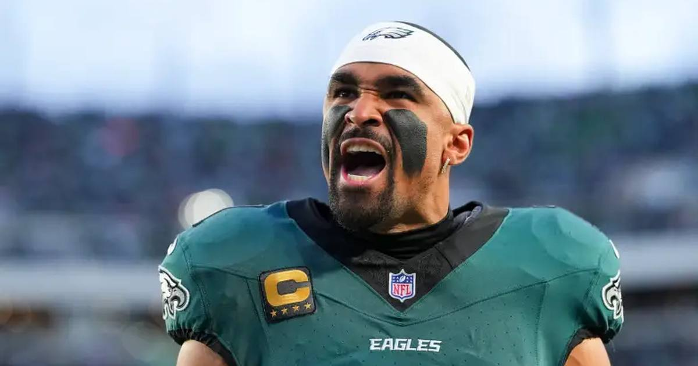

NFLPA Demands 'Full Investigation' Into Jalen Hurts' Care; Goodell Says Bring It On
The union says the league told it no review was planned into how the Eagles handled Hurts' blood clot before the London game. Now the commissioner says he welcomes one.

The Jalen Hurts situation isn't going away — and now the union wants answers.
The NFL Players Association issued a statement Tuesday night demanding a "full investigation" into the medical care provided to the Philadelphia Eagles quarterback, who is likely out for the season with blood clots.
What the union says
"The NFLPA is not aware of any NFL investigation into the medical care provided to Jalen Hurts," the statement read. "In fact, the league previously informed the union that it did not plan to review the care he received."
"Before conclusions are drawn about how this situation was handled, there must be a full investigation into what occurred. Determining the facts is essential to ensuring players receive the highest level of care and protection going forward."
The timeline under scrutiny
A superficial blood clot was found in Hurts' calf during an ultrasound on Oct. 10 — the day before the Eagles' London game against Jacksonville. He was cleared to play on Oct. 11, then flew back across the Atlantic with the team. Days later, the clot had become deep vein thrombosis and bilateral pulmonary emboli — clots in his lungs. Treatment means blood thinners, which rule him out for the rest of the season.
The league's response
NFL chief medical officer Dr. Allen Sills defended the Eagles' staff Tuesday: "The notion that there's external factors that any of our physicians would put a player in harm's way — that's nonsense."
And commissioner Roger Goodell, wrapping the fall owners' meetings Wednesday, said: "We welcome that. That's part of our process. That's fine."
Hurts, 28, was the 2025 Super Bowl MVP. The Eagles now have to save their season without him.
Gear up: Sports category post → [Fanatics](https://fanatics.93n6tx.net/WOLjqe): via Fanatics